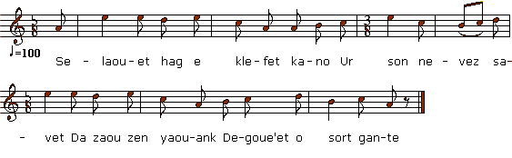

|
Kimiad daou zoudard yaouank 1. Selaouet hag e klefet kano ur son nevez savet Da zaou zen yaouank degoue'et o sort gante 2. 'R'c'hentañ oa mab d'an tailher, 'r'c'hentañ mab an tailher Egil' all oa Jos Graig 'bihanatik eus ar gêr 3. Ha p'hini emañ maget e rouz e feunteun wenn E-barzh un tiig bihan 'kichen ar Vailhurenn 4. Jos Graig bihan lare pe oa soudard e vab : Dav eo degas un ofrañs evit dont da Vulat Ha ma blijo gant Doue, chomo ganin ma mab 5. 'Baotred yaouank neuz' lare pa oant 'ont kuit eus kêr Kenavo Itron Varia ha c'hwi aotrou Sant Per 6. Douget am eus aliesik banniel bras ho iliz Kerkoulz ha d'an ofern-bred evel d'ar gousperoù 7. Kerkoulz ha d'ar gousperoù evel d'an ofern-bred Ha da zul ar sakramant d'ar bloavezh tremenet 8. Deomp-ni da gemer bremañ rout' ar C'hastell-Nevez Kastellin a zigoue'o soudennik hep dale 9. 'Baotred yaouank neuz' lare 'n ur vont maez eus o zi Kenavo ma c'hoar Mar'jannig ha c'hwi ma c'hoar Mari 10. Pa oant e kreac'h menez Rou' war an hent bras o vont Me glev kleier Landreger 'seniñ d'an oferenn 11. Me lare d'am c'hamaraded : deomp-ni d'an oferenn Kar d'al leac'h e yamp bremañ n'eus ket a veleien 12. Kar d'al leac'h e yamp bremañ n'eus ket a veleien Da laret ar gousperoù kennebeud 'n ofern-bred |
L'adieu de deux jeunes conscrits 1. Je vais vous interpréter un chant nouveau qu'on a composé Sur deux garçons que le sort a désignés. 2. Le premier était le fils de Tailleur, son aîné je crois bien, L'autre le fils de Joseph Graïk, le nain. 3. Ce dernier avait grandi parmi la lande de Feunteunven, Dans la maisonnette à côté des Mailleur. 4. Joseph Graïk a dit, quand il sut que son fils serait soldat: "Juste une offrande à la Vierge de Bulat, Et si cela plait à Dieu, mon fils me restera." 5. Et les deux garçons disaient, laissant le village derrière eux: "O Sainte Marie et vous, saint Pierre, adieu! 6. Combien de fois j'ai porté la grande banniêre de l'église, Que ce soit la messe ou les vêpres qu'on dise. 7. Aux vêpres je l'ai portée, à la grand' messe pareillement, Et l'an passé, le jour du Saint-Sacrement. 8. Prenons la route à présent qui conduit à Châteauneuf tout droit, Bientôt ce sera Châteaulin qu'on verra." 9. Les deux jeunes gens disaient, sur le point de quitter leurs maisons, "Au r?evoir mes surs Marie-Jeanne et Marie." 10. Puis l'on entendit sur la grand-route à hauteur du Menez-Roué, Les cloches sonner pour la m?esse à Trégui?er. 11. Je disais à mes amis: "Nous irons à la messe à Tréguier, Car il n'est point de prêtres, où nous allons. 12. Non, il n'est point d?e prêtres, là-bas où nous allons à présent Pour chanter vêpres ou grand' messe?, vraiment." |
Farewell of two young conscripts 1. Listen and you shall hear a song that was composed quite recently About two young men drafted for the army. 2. One was the son of Tailleur, and he was his eldest son indeed. And the other was little Jo GraïK's son. 3. Who cultivates the soil upon the moor towards the White Fountain, And lives in a cottage beside the Mailleurs'. 4. Little Jo Graïk has said when he heard that his son was drafted: "I'll bring offerings to our Lady of Bulat If it pleases God, my son will stay with me." 5. And then, the two youths said, as they were walking out of the village: "Farewell, Our Lady! And farewell, Saint Peter! 6. O, how often did I carry your holy banner in your church, Either at Sunday mass or at the vespers! 7. At the vespers I've carried it, as well as at Sunday high mass, Carried it last year, on Saint Sacrament's Day. 8. Let us now follow the highroad in direction of Châteauneuf! We shall spy Châteaulin every moment." 9. The young men, when they have left from home, have kissed their sisters goodbye: "Goodbye, dear Marie-Jeanne! Goodbye, dear Mary!" 10. When they went up the hill of King's Mount, walking along the high road, They heard the clocks ring for the mass in Tréguier. 11. I said to my buddies: "Let us go to that church and hear the mass, For where we are going we shall have no priest, 12. For where we are going now, I am afraid we shall have no priest To celebrate the vespers or the high mass." |
|
[1] H. Guillerm indique: "La personne qui chanta cette chanson ne sait ni lire ni écrire. De plus, elle ne comprend pas un mot de français. Ceci est cause de l'originalité du langage employé dans cette poésie populaire. Nous affirmons que cette manière de faire est celle du parler populaire de Trégunc et des environs : breton très original et qui semble une véritable transition entre le breton de Cornouailles et celui de Vannes. Il y aurait beaucoup à dire au sujet du langage parlé de Trégunc
et environs. Ceci sortirait du cadre que nous nous sommes tracé et serait véritablement trop long. Les amateurs n'ont qu'à se transporter sur les lieux et trouveront amplement matière à satisfaire leur curiosité de linguistes." [daté de 1905!] [2] Francis Gourvil ("La Villemarqué...", p.457), rapproche ce chant de celui du Barzhaz intitulé "Les Ligueurs" qu'il affirme avoir été, non pas démarqué, mais inventé par La Villemarqué "afin de doter son ouvrage d'une pièce relative à la Ligue, celle qui concerne La Fontenelle n'offrant, en effet, rien qui la rattache visiblement aux guerres de religion". Pour ce faire, il se serait inspiré des strophes 5, 6, 7 et 10 qui montrent des jeunes gens faisant leurs adieux à l'église, aux bannières et aux cloches de leur village. On peut, en s'appuyant sur les mêmes strophes établir un parallèle entre ce chant et le Baron Jauioz (du même Barzhaz Breizh). [3] C'est à juste titre que Gourvil indique que les deux dernières strophes laissent supposer que le présent chant, loin d'invoquer la Ligue, pourrait bien être contemporain de la conquête de l'Algérie (1830) |
[1] H. Guillerm writes: "The woman who sung this lament cannot read or write. Furthermore she does not understand French. Therefore the language used in this truly popular poem is genuine. And we certify that our spelling is a true rendering of the dialect spoken in the Tregunc district, a unique variety of Breton, half way between Cornouaille and Vannes dialects. Much more could be said about the Tregunc vernacular language. But it would exceed the bounds of the present document. Anyone interested in this topic should repair to the aforesaid locality where they will find abundant linguistic material to investigate." [Written in 1905!] [2] Francis Gourvil (in "La Villemarqué...", p.457), parallels this piece with the Barzhaz song titled "The League" which he claims to be not even imitated, but invented by La Villemarqué "in order to provide his work with a song relating to the League, since the La Fontenelle song is not visibly connected to the French religious wars.". To that end he had allegedly adapted the stanzas 5, 6, 7 and 10 featuring young men saying "farewell" to the church, banners and bells of their native village. It is possible, relying on the same stanzas, to demonstrate a likeness between the present song and the lament of Baron Jauioz (in the Barzhaz Breizh). [3] With just reason does Gourvil notice that the last two stanzas in the present song may hint at the conquest of Algeria in 1830. |